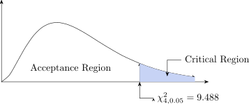

4.2 One-way analysis of variance
The two-sample \(t\)-test compares two means. To compare \(k>2\) means at once we use the analysis of variance (ANOVA), which tests \[H_0:\mu _1=\mu _2=\cdots =\mu _k\qquad \text {against}\qquad H_1:\ \text {at least two means differ}\] by comparing the variation between the sample means with the variation within the samples. A one-way analysis classifies the data by one factor (the columns); a two-way analysis classifies them by two (rows and columns), as in the randomised block design below.
For example, with four fertilisers:
\(H_0:\) There is no difference between fertilizers
\(\mu _1=\mu _2=\mu _3=\mu _4\), \((\mu _i=\mu )\,i=1,2,3,4\)
\(H_1:\) At least two fertilizers are different \((\mu _i \neq \mu )\)
Write \(x_{ij}\) for the \(j\)th observation in the \(i\)th group, \(T_j\) for each group total and \(T\) for the grand total. The quantities we need are: \begin {align*} T(\text {sum of all n observations}) & = T =\sum x_{ij}\\[1ex] SS_T = \text {Total sum of squares} &= SS_T = \sum x^2_{ij}-\frac {T^2}{n}\\[1ex] SS_B = \text {Between samples sum of squares} & = SS_B = \sum _{j=1}^{k}\frac {T_j^2}{n_j}-\frac {T^2}{n}\\\ SS_W = \text {Within sample sum of squares} &= SS_W =SS_T - SS_B\\[1ex] MS_{\varepsilon } & =\text {mean square error} = \frac {SS_W}{n-k} \end {align*}
| Source of variation | SS | df | MS | F-statistic |
| Between Sample | \(SS_B\) | \(v_1=k-1\) | \(\frac {SS_B}{k-1}=MS_B\) | \(F=\frac {MS_B}{MS_{\varepsilon }}\) |
| Within Sample | \(SS_W\) | \(v_2=n-k\) | \(\frac {SS_W}{n-k}=MS_{\varepsilon }\) | |
| Total | \(SS_T\) | \(n-1\) | ||
Example 4.2. Three fertilisers were each applied to four plots, and the yields recorded. Test at \(\alpha =5\%\) whether the mean yield differs between fertilisers.
Solution.
- 1.
- Set up the hypothesis
\(H_0: \mu _1=\mu _2=\mu _3\)
\(H_1:\) at least two of the means differ - 2.
- Level of significance \(\alpha =5\%\)
- 3.
- Test statistic. Here \(k=3\) groups, \(n_j=4\) each and \(n=12\), with grand total \(T=8+14+12=34\), so the correction factor is \[\frac {T^2}{n}=\frac {34^2}{12}=\frac {1156}{12}=96.333\]
\begin {align*} SS_T &=\sum x_{ij}^2-\frac {T^2}{n}=[3^2+2^2+1^2+\cdots +1^2]-96.333=118-96.333=21.667\\[1ex] SS_B &=\sum _{j=1}^{k}\frac {T_j^2}{n_j}-\frac {T^2}{n}=\frac {8^2+14^2+12^2}{4}-96.333=\frac {404}{4}-96.333=4.667\\[1ex] SS_W &=SS_T-SS_B=21.667-4.667=17.000 \end {align*}
Source SS df MS \(F\) Between samples 4.667 \(k-1=2\) \(4.667/2=2.333\) \(2.333/1.889=1.235\) Within samples 17.000 \(n-k=9\) \(17.000/9=1.889\) Total 21.667 \(n-1=11\) Table 38: ANOVA table for the fertiliser data. Note that the degrees of freedom add up, \(2+9=11\), and so do the sums of squares. If they do not, there is an arithmetic slip somewhere above.
- 4.
- Critical region. From tables \(F_{2,\,9,\,0.05}=4.26\), so we reject \(H_0\) if \(F>4.26\).
- 5.
- Conclusion. \(F=1.235<4.26\), so we fail to reject \(H_0\). There is no evidence at the \(5\%\) level that the three fertilisers differ in mean yield.
Look at where the variation went. Of the total \(21.667\), only \(4.667\) lies between the fertilisers and \(17.000\) lies within them — plot-to-plot differences under the same fertiliser are far larger than the differences between fertilisers. That is what \(F\) compares, and it is why the test comes out as it does.
Assumptions Made In Analysis Of Variance
- 1.
- The \(k\) parent populations from which the samples are drawn are normally distributed with respective means \(\mu _1, \mu _2, \ldots , \mu _k\).
- 2.
- The samples drawn are randomly and independently.
- 3.
- The population have equal and stable variances (Homoscedasticity).
- 4.
- The effects are additive. This means that \(x_{ij}\), the j\(^{\text {th}}\) observation in the i\(^{\text {th}}\) sample or the class
or made up of class an overall effect \(\mu \).
Sum of squares identity \(SS_T = SS_B + SS_W\) \[\underbrace {\sum _{i=1}^k \sum _{j=1}^{n_i}(x_{ij}-\overline {\overline {x}})^2}_{SS_T} =\underbrace {\sum _{i=1}^k n_i(\overline {x}_i-\overline {\overline {x}})^2}_{SS_B} +\underbrace {\sum _{i=1}^k\sum _{j=1}^{n_i}(x_{ij}-\overline {x}_i)^2}_{SS_W}\]
Read it as the sentence it is: the total spread of every observation about the grand mean splits exactly into the spread between group means and the spread within groups. The two right-hand terms must use different centres – the grand mean \(\overline {\overline {x}}\) for the first, each group’s own mean \(\overline {x}_i\) for the second – and that is the whole content of the identity. Using the same centre in both would not add up.
Proof. The trick is to add and subtract the group mean \(\overline {x}_i\), so that each deviation from the grand mean splits into two pieces: \[x_{ij}-\overline {\overline {x}}=(\overline {x}_i-\overline {\overline {x}})+(x_{ij}-\overline {x}_i)\] Squaring and summing, \begin {align*} \sum _{i=1}^k\sum _{j=1}^{n_i}(x_{ij}-\overline {\overline {x}})^2 &=\sum _{i=1}^k\sum _{j=1}^{n_i}[(\overline {x}_i-\overline {\overline {x}})+(x_{ij}-\overline {x}_i)]^2\\[1ex] &=\sum _{i=1}^k\sum _{j=1}^{n_i}[(\overline {x}_i-\overline {\overline {x}})^2+(x_{ij}-\overline {x}_i)^2 +2(\overline {x}_i-\overline {\overline {x}})(x_{ij}-\overline {x}_i)]\\[1ex] &=\sum _{i=1}^k n_i(\overline {x}_i-\overline {\overline {x}})^2+\sum _{i=1}^k\sum _{j=1}^{n_i}(x_{ij}-\overline {x}_i)^2 +2\sum _{i=1}^k(\overline {x}_i-\overline {\overline {x}})\sum _{j=1}^{n_i}(x_{ij}-\overline {x}_i) \end {align*}
The identity only works because that last term is zero. In the inner sum \((\overline {x}_i-\overline {\overline {x}})\) is a constant, so it comes outside, and what is left is \[\sum _{j=1}^{n_i}(x_{ij}-\overline {x}_i)=0\] since deviations about their own mean always cancel. The whole cross-product term therefore vanishes, leaving \[SS_T = SS_B + SS_W .\] □
Example 4.3. Five treatments were each applied to five plots, with the results below. Test at \(\alpha = 0.05\) whether there is any significant difference between the treatments.
| \(T_1\) | \(T_2\) | \(T_3\) | \(T_4\) | \(T_5\) | ||
| \(R_1\) | 5 | 9 | 3 | 2 | 7 | 26 |
| \(R_2\) | 4 | 7 | 5 | 3 | 7 | 26 |
| \(R_3\) | 8 | 8 | 2 | 4 | 9 | 31 |
| \(R_4\) | 6 | 6 | 3 | 1 | 4 | 20 |
| \(R_5\) | 3 | 9 | 7 | 4 | 7 | 30 |
| Total | 26 | 39 | 20 | 14 | 34 | \(133 = g\) |
Solution.
- 1.
- \(H_0:\mu _1=\mu _2=\mu _3=\mu _4=\mu _5\) against \(H_1\): at least two differ.
- 2.
- \(\alpha = 0.05\), with \(N = 25\) observations in \(c = 5\) treatment groups of \(r = 5\).
- 3.
- Test statistic. The correction factor is \(cf = \frac {g^2}{N} = \frac {133^2}{25} = 707.56\), and \begin {align*} SS_T &= \sum \sum x_{ij}^2 - cf = 847 - 707.56 = 139.44,\\ SS_C &= \frac 1r\sum C_j^2 - cf = \frac {26^2 + 39^2 + 20^2 + 14^2 + 34^2}{5} - 707.56 = \frac {3949}{5} - 707.56 = 82.24,\\ SS_E &= SS_T - SS_C = 139.44 - 82.24 = 57.20 . \end {align*}
Source of variation df SS MS F Treatments \(c-1=4\) 82.24 \(\frac {82.24}{4}=20.56\) \(\frac {20.56}{2.86}=7.19\) Error \(N-c=20\) 57.20 \(\frac {57.20}{20}=2.86\) Total \(N-1=24\) 139.44 - 4.
- Critical region. \(F_{0.05,\,4,\,20} = 2.87\), so we reject \(H_0\) if \(F>2.87\).
- 5.
- Conclusion. \(F = 7.19 > 2.87\), so we reject \(H_0\): the treatments differ (\(P = 0.0009\)). The treatment means run from \(\frac {14}{5} = 2.8\) for \(T_4\) to \(\frac {39}{5} = 7.8\) for \(T_2\), far more than the within-treatment variation would explain.

Questions on this section
Stuck on something here? Ask below and it stays attached to this topic.